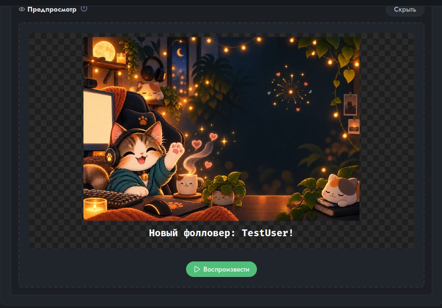

Twitch-бот, который живёт у вас на компьютере
Команды в чате, реакции на награды за баллы и события, автоматические шатауты и картинки со звуком прямо в OBS. Ничего не отправляет на чужие серверы, не просит пароль и не требует руководства: интерфейс объясняет себя сам.
Без подписок, лимитов и «премиум»-функций. Вход в Twitch хранится в защищённом хранилище вашей системы и никуда не отправляется.

Три принципа
Всё у вас
Бот работает на вашем компьютере, а не на чужом сервере. Единственный сервер здесь — маленький локальный, внутри самого приложения, для оверлеев OBS; он принадлежит только вам. Настройки, картинки и звуки остаются у вас, а вход в Twitch хранится в защищённом хранилище вашей системы. Вход подтверждается кодом на странице Twitch, пароль приложению не нужен. Не нужно заводить аккаунт в стороннем сервисе и надеяться, что он сегодня работает.
Интерфейс объясняет себя сам
У каждой настройки подсказка рядом, а капсулы на карточках при наведении рассказывают о себе: какие алиасы у команды, кто может её вызывать, на какой источник отправятся звуки и картинки. Предпросмотр показывает алерт ровно так, как увидит зритель. Если бот чего-то не может, он говорит об этом словами и предлагает, что сделать.
Бесплатно и без ограничений
Нет платной версии, подписки, лимитов на число команд или оверлеев, «премиум»-функций и рекламы. Всё, что умеет бот, доступно каждому сразу — и так останется. Это принцип проекта, а не этап перед монетизацией. Код открыт под лицензией MIT.
Скачать
Версия 1.0.5 от 30.09.2026. Файлы отдаёт GitHub, установка не требует ни аккаунта, ни регистрации.
sudo apt install ./SignoreBot_1.0.5-linux-amd64.debchmod +x SignoreBot_1.0.5-linux-amd64.AppImageЧто нового в 1.0.5
- Хайповоз. Три новых события на вкладке «События»: «Хайповоз начался», «Хайповоз: новый уровень» (только на переход уровня, не на каждый вклад) и «Хайповоз завершился», с переменными
{level},{total},{goal},{progress},{topUser},{topType},{topAmount}. Нужно правоchannel:read:hype_train— бот запрашивает его при входе; со старым токеном карточки помечены «нужно право», остальное работает как прежде. - «Медиа»: переименование и порядок. В окне файла поле «Имя файла»: новое имя применяется по «Сохранить» вместе с наборами, ссылки в реакциях, резервах оверлеев и наборах обновляются сами; расширение менять нельзя. Импорт больше не переписывает имена: кириллица, пробелы и скобки остаются, заменяются только символы, недопустимые в Windows. Сортировка списка: сначала новые или старые, по имени, размеру, типу (запоминается).
- Значки заменены на более геометрически точные. Все значки панели и сайта взяты из набора Klaarheid Icons: они построены из отрезков и дуг окружностей на единой сетке. Заодно у разных смыслов теперь разные значки: «Тест» — колба (play остался у плеера), хайповоз — паровоз, ошибка в уведомлении — крестик в круге (не тот же, что «закрыть»), доступные переменные — фигурные скобки, «Если недоступен» у оверлея — спасательный круг вместо предупреждения; у каждого раздела один значок и в меню, и в заголовке.
- Термины по-русски там, где Twitch их перевёл: «Серия просмотров» вместо «Watch Streak», «Bits» без «Cheer», «шатаут» вместо «shoutout» в текстах вкладки, «связь с Twitch» вместо «EventSub» на «Состоянии» и «Баллах канала».
- Панель «Шатауты» и подсказки переменных говорят о рейдах точно: шатаут за рейд получает стример, который его привёл, один на весь рейд, а не каждый пришедший зритель; варианты режима переименованы («Ни за какие рейды», «Только если стример есть в списке», «За любой рейд»).
- Исправлено: файл, который использует только резервная реакция оверлея, считался сиротой и попадал под «Удалить неиспользуемые».
- Обновления через сайт. Кнопки «Обновить» и «Скачать» ведут на страницу скачивания сайта — с карточкой для вашей системы и подсказками по установке, а не на страницу релиза GitHub. О новых версиях бот узнаёт из файла
version.jsonна сайте, а не через API GitHub, и предлагает версию, только когда её файлы уже выложены. Адрес в настройках стал адресом сайта (прежний адрес репозитория заменяется сам; форк может указать свой сайт, свой репозиторий или прямую ссылку на JSON). Сам сайт тоже перестал обращаться к API GitHub: версия, дата, ссылки и «что нового» подставляются при сборке. - Лицензии: перевод лицензии MIT на русский (
LICENSE_RU.md);THIRD-PARTY-NOTICES.mdвместоTHIRD-PARTY.md— шрифты с правообладателями, значки, библиотеки панели и ядра с версиями и лицензиями (полный список крейтов —third-party/rust-crates.md), чужие картинки на сайте; рядом со шрифтом Source Code Pro теперь лежит копирайт Adobe, как требует его лицензия; порядок правок —CONTRIBUTING.md. - Для разработки:
npm run check— стражи внешних адресов, значков, шрифтов и лицензий библиотек;npm run icons:syncберёт значки из локальной копии набора Klaarheid (по сети ничего не качает);npm run licensesпересобирает список библиотек; проверка на GitHub Actions. - Сайт: карточка Windows первой, карточки чужой ОС приглушены (ОС определяется в браузере, ничего никуда не отправляется); исправлен 404 на значок вкладки при переходах между уроками; уточнены формулировки про «серверы» (внешних нет, локальный сервер оверлеев принадлежит вам), про «зафолловиться» и про рейды в уроках 3, 5, 7 и 9; то же в README.
Все сборки и прошлые версии — на странице релизов. Обновления приложение проверяет само и показывает плашку со ссылкой сюда; настройки и медиа при обновлении остаются на месте. Собрать из исходников — README.
Как начать: девять коротких уроков
Каждый урок — про одну вещь: что нажать, что вы увидите и что означает слово, которое встретится по дороге. Скриншоты сняты с чистой установки, так что у вас на экране будет то же самое. Это не справочник: всё, чего здесь нет, подскажет сама панель.
Спасибо
Этим людям, которые помогали SignoreBot стать тем, что он есть: кто-то помогал тестировать, кто-то подкидывал идеи, кто-то даже доверял свои стримы первым сырым сборкам и давал обратную связь.